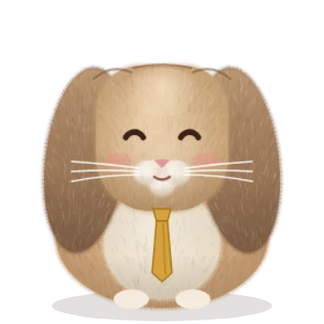
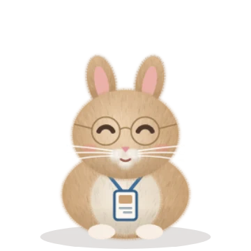
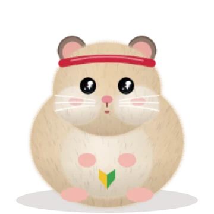

Ren & Jill: Hay Dash
Two office bunnies, one mad dash across Tokyo. A free runner game.
What is it?
It is 8 a.m. and Ren, the boss bunny, has overslept! With his assistant Jill he races from his home to the station, onto the train, through the office and out to Tokyo sights in the evening. Grab the hay (a rabbit’s staple food) along the way, dodge everything else and see how far you get.
The route changes every run and you choose detours at forks. Each season brings limited-time hats and decorations.
How to play
- Swipe left/right (arrow keys ← →): change lanes to dodge
- Swipe up (↑): jump. Swipe down (↓): slide
- At a corner, swipe the way the arrow points
- Eating fills the munch meter; when it is full you get a munch fever (crash-proof, double score)
- Food that is bad for rabbits (chocolate, for example) makes you woozy: check the food book
There are missions, a stamp book of Tokyo sights, a food book and a shop with hats and ties to dress up in.
Characters

The boss, a Holland Lop with floppy ears and a tie. A hay lover: +20% hay.

His assistant, a Netherland Dwarf with upright ears, round glasses and an ID badge. Organized: power-ups last 30% longer.

The sporty new hire, a golden hamster. You might bump into him on the road, and once you have, you can run as Pom too.
Tokyo spots on the way
85 places to collect in the stamp book. Some of them:
- Yamanote Line: The loop line around central Tokyo, known by its pale green stripe.
- Tokyo Station: The red-brick station building, restored to its original look in 2012.
- Ginza: On weekend and holiday afternoons Chuo-dori becomes a pedestrian street.
- Yurakucho: Brick arches and small bars under the elevated tracks.
- Kaminarimon: The gate of Senso-ji temple, famous for its giant red lantern.
- Sumida River: The water bus glides under a series of colorful bridges.
- Oshiage tower: A 634 m broadcasting tower. Its sky walkway is about 450 m up.
- Shibuya Crossing: When the lights turn green, people cross from every direction at once.
- Red tower in Shiba: A 333 m broadcasting tower. About 600 outdoor steps lead up to the deck at 150 m.
- Akihabara: Electric Town: electronics, games and anime shops.
- Ueno Park: A big park full of museums and a zoo. The ginkgo trees turn yellow in autumn.
- West Shinjuku: A forest of skyscrapers, including the Tokyo Metropolitan Government Building.
- Odaiba bridge: The suspension bridge between Shibaura and Odaiba, lit up at night.
- Imperial Palace: Moats, stone walls and black pines, with the Fushimi-yagura turret beyond Nijubashi bridge.
- Naka-dori: A tree-lined stone-paved street, lit with champagne-gold lights in winter.
- Gaien ginkgo avenue: Four rows of cone-trimmed ginkgo trees turn into a golden tunnel in autumn.
- Ameyoko: A packed market street along the elevated tracks, loud with shop calls.
- Kabukicho: The red gate and a sea of neon that grows brighter as night falls.
- Omotesando: A zelkova-lined boulevard that began as the approach to Meiji Jingu shrine.
- Chidorigafuchi: About 700 m of cherry trees along the palace moat. Blossoms hang over the water, boats glide beneath, and paper lanterns light them at night.
- Subway: Trains under the city; tunnel lights stream past the windows.
- Streetcar: Tokyo's last streetcar line, rolling slowly through the neighborhoods; roses bloom along it in spring.
- Bayside train: A driverless line that loops up onto the bridge over the bay.
- Staff canteen: The company canteen. The daily set meal is the one to get.
- Rooftop garden: A small garden on the roof, good for a breather at lunch.
- Nihonbashi: The stone bridge from which all road distances in Japan are measured, with an expressway passing overhead.
- Tsukiji Outer Market: Packed with stalls of rolled omelet, seafood, knives and dried goods; busiest in the morning.
- Hibiya Park: Japan's first Western-style park, with flower beds and a fountain.
- Jimbocho: A town of over a hundred second-hand bookshops, with bargain carts out front.
- Kagurazaka: A hillside town of narrow stone lanes, black wooden fences and old restaurants.
- Shiodome: Towers built on an old freight yard, with the red tower peeking between them.
- Shimbashi: A station square busy with office workers after hours, with a steam locomotive on display.
- Hama-rikyu: An old lord’s garden with a seawater pond; skyscrapers rise beyond the pines.
- Yanaka: An old-style shopping street by a famous sunset staircase, in a town full of cats.
- Nezu torii: A path through rows of small red torii gates; azaleas cover the slope in spring.
- Kitchenware street: A wholesale street selling every kitchen tool, from knives and dishes to shop signs and noren curtains.
- Ryogoku: The home of sumo: bright banners line the street during tournaments, and hot-pot restaurants are everywhere.
- Kiyosumi: A garden of famous stones from across Japan around a big pond full of turtles and carp.
- Sumida Park: Cherry trees line both banks, with the Oshiage tower beyond.
- Shinobazu Pond: The pond in Ueno Park, covered in lotus leaves in summer; you can rent a boat.
- Yakatabune: A roofed pleasure boat hung with lanterns, for dinner with a view of the city from the river.
- Forest approach: Pass under the great wooden torii into a forest you would never expect in the heart of the city.
- Takeshita Street: A narrow street packed with crêpe stands and vintage shops, busy with young people.
- Shibuya streets: Busy streets climbing up from the station, crammed with fashion, record shops and cafés.
- Daikanyama: A calm hillside neighborhood of low, stylish buildings and cafés.
- Meguro River: About 800 cherry trees line the river: a tunnel of blossom in spring, blue lights in winter.
- Roppongi: A town of museums and restaurants, with the red tower looming at the end of the slope.
- Shinjuku Gyoen: Wide lawns and huge trees; famous for cherry blossoms in spring and autumn color.
- Shinjuku alleys: Tiny yakitori bars squeezed into narrow alleys beside the tracks.
- Ikebukuro: A big northern hub of arcades, cinemas and anime shops.
- Shin-Okubo: Korean restaurants and cosmetics shops, with the smell of hotteok (sweet filled pancakes) from street stalls.
- Shiba temple: A great temple from the Edo era, with the red tower rising right behind its vermilion gate.
- Toyosu: A new market town of high-rises, with city lights across the water from the promenade.
- Odaiba beach: A man-made beach facing the suspension bridge and the city skyline.
- Sanno torii: A slope of red torii gates right beside the skyscrapers.
- Tsukishima: Over seventy griddle restaurants serving monja-yaki (a runny savory pancake), with old row houses in the alleys.
- Kanda shrine: The approach to the shrine that has watched over Tokyo since it was Edo; many office workers pray here for good business.
- Kuramae: A craft neighborhood of leather and stationery workshops and coffee roasters.
- Sumida terrace: A riverside walk with a run of differently colored bridges, lit up at night.
- Shibamata: A temple street of old shops selling mugwort dumplings and rice crackers, famous from classic films.
- Cat Street: A winding back street built over an old river, lined with vintage and design shops.
- Shimokitazawa: A maze of narrow streets full of vintage shops, small theaters and live-music clubs.
- Yoyogi Park: Wide lawns and a cycling track; on weekends it fills with people practicing music and dance.
- Kichijoji: A park pond with swan boats, in one of Tokyo’s most popular neighborhoods.
- Takeshiba pier: The pier for ferries to the islands, with the suspension bridge ahead and the red tower behind.
- Underground mall: A huge shopping street under the station, packed with souvenir shops and ramen counters.
- Ochanomizu: Guitar shops line the slope, with trains and a river running side by side in the valley below.
- Koishikawa: An Edo-era lord’s garden recreating famous Chinese and Japanese scenery in miniature.
- Akasaka: A grown-up nightlife district of traditional restaurants, barbecue and Korean food.
- Okachimachi: Jewelry wholesalers and shops under the tracks, all the way up to Ueno.
- Monzen-nakacho: A temple-and-shrine town with stalls on its monthly fair days.
- Kiba Park: Once a timber town where logs floated in the canals; now a big park.
- Ebisu: Smart restaurants and little alley bars side by side, with a statue of Ebisu, god of good fortune, by the station.
- Nakano: A long covered shopping street leading to a building packed with manga and toy shops.
- Koenji: Vintage shops and old shopping streets; a huge dance festival fills it in summer.
- Jiyugaoka: European-style streets famous for cake and sweet shops.
- Sangenjaya: A triangle between two big roads, packed with a maze of tiny bars.
- Outer moat: The bank of the old castle’s outer moat, now a long tree-lined walk beside the tracks.
- Ichigaya: Right outside the station, the old moat has a fishing pond and boats.
- Tennozu: A wooden boardwalk along the canal, with murals and galleries.
- Harumi pier: A cruise-ship pier with the city towers and the suspension bridge across the water.
- Kachidoki Bridge: An iron drawbridge whose middle once opened to let ships through.
- Airport monorail: A one-rail train gliding over canals and warehouses out to the airport.
- Departure hall: Planes beyond the tall windows, and a board flipping to new destinations.
- Airport deck: A rooftop by the bay where planes take off one after another right in front of you.
FAQ
- Is it free?
- Yes. Everything is free to play, with no in-app purchases or ads.
- Do I need to sign up or download anything?
- No. Just open the page in your browser. Add it to your home screen to launch it like an app, even offline.
- Can I play on a phone and a PC?
- Yes. Swipe on a phone; use the arrow keys (or WASD) on a PC.
- What happens to my progress if I change phones?
- On the old device tap ⚙ → “Get a transfer code”, then on the new one tap ⚙ → “Move progress here” and enter the 8 letters. No sign-in needed.
- Is there a leaderboard?
- Yes. Runs in the app version go on the public leaderboard (this month and all time). Names are up to 12 characters; unnamed players show as a number.
- Can I challenge friends?
- When you share a result, the link carries your score. Whoever opens it gets a challenge to beat it.